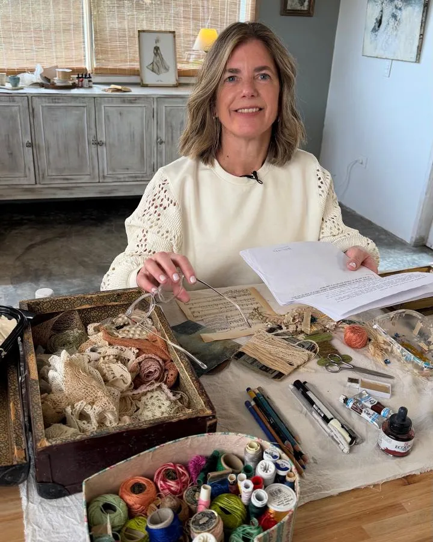
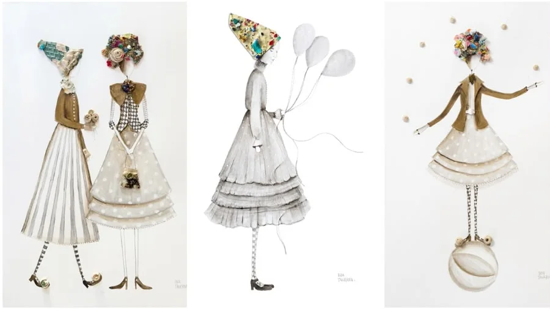
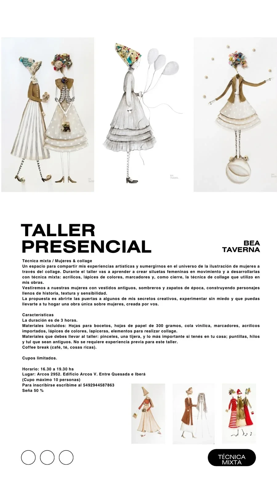

Taller presencial · Técnica mixta · CollageSiluetas femeninas en movimiento, vestidos antiguos, sombreros y zapatos de época: una tarde para crear tu propia obra y llevártela a casa.
Bea abre su taller para compartir sus experiencias artísticas y algunos de sus secretos creativos. Vas a aprender a crear siluetas femeninas en movimiento y a desarrollarlas con técnica mixta: acrílicos, lápices de colores y marcadores.
Como cierre, la técnica de collage que ella usa en sus obras: vestimos a nuestras mujeres con vestidos antiguos, sombreros y zapatos de época, y construimos personajes llenos de historia, textura y sensibilidad.
La idea es experimentar sin miedo y que te lleves una obra única, creada por vos.

Obras de Bea Taverna en técnica mixta y collage.
Hojas para bocetos, hojas de papel de 300 gramos, cola vinílica, marcadores, acrílicos importados, lápices de colores, lapiceras y elementos para hacer el collage.
Pinceles y una tijera. Y lo más importante: si tenés en tu casa puntillas, hilos y tul antiguos, traelos. Son los que le dan alma a cada obra.

Las consultas e inscripciones las gestiona directamente Bea.
Consultar por WhatsApp